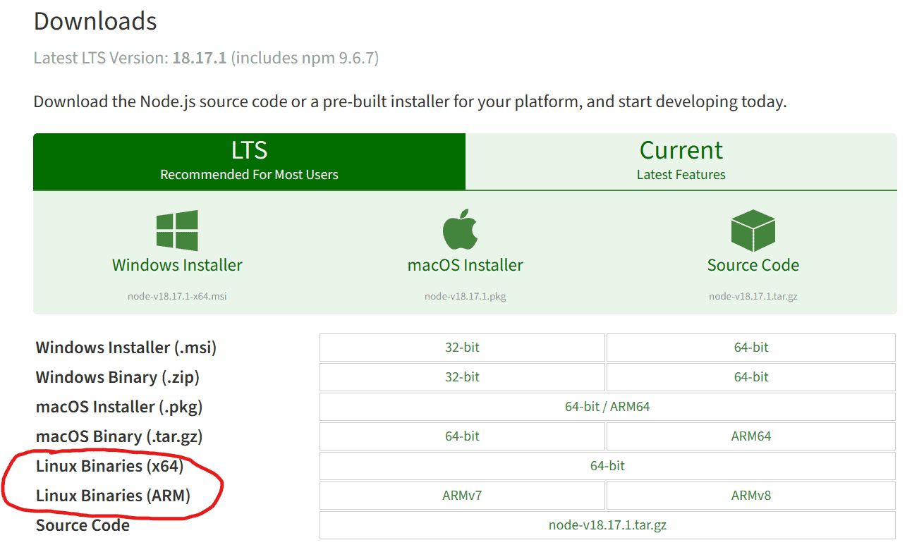
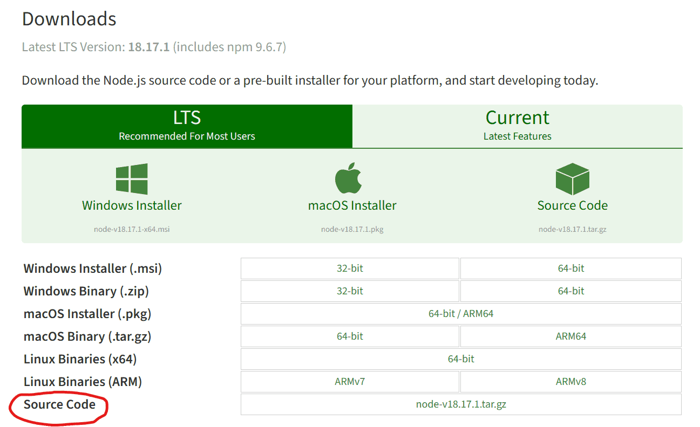
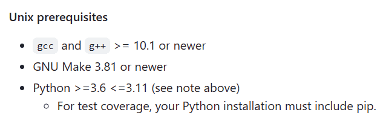
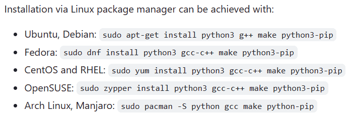

Linux下Nodejs安装与配置
一、安装
本篇不会特别指出任何使用包管理器安装 Nodejs 的方法，如果你对包管理器不了解或者说不知道自己的系统的包管理器如何使用，我强烈建议你移步我的另一篇文章：Linux 环境一般软件安装方法，该篇文章详细说明了使用包管理器安装软件的一般方法，以后也就不用每次安装软件时都上网搜索了！
-
选择二进制包
Nodejs 官网提供了一种二进制包，首先通过前面的链接前往其下载页面：

根据你机器的架构选择对应的二进制包即可。ARM 架构的 CPU 通常是手机平板等设备使用，如果是 PC，则通常选择 x86 即可
注意：
既然你都来搜索安装教程了，那我推荐你安装 LTS 版本（即长期支持版本），该版本比较稳定。
-
下载二进制包
1
wget https://nodejs.org/dist/v18.17.1/node-v18.17.1-linux-x64.tar.xz
注意：
- 此处的链接是通过复制下载按钮链接获取的，如果你想下载最新的二进制包请自行前往官网获取
wget工具的使用方法请使用wget --help自行获取，本篇不涉及该工具的使用教程
-
解压
1
tar -xvf node-v18.17.1-linux-x64.tar.xz
注意：
-
tar工具的使用方法请使用tar --help自行获取，本篇不涉及该工具的使用教程 -
解压会得到一个解压包，我解压所得到的名字是
node-v18.17.1-linux-x64，由于你可能下载的版本和我不同，如果你是一个小白，建议你先将这个解压包按照下面的方法重命名，然后再跟着后面的教程走：1
mv node-v18.17.1-linux-x64 nodejs
该解压包被重命名为
nodejs，后续也以该名字为准
-
-
将其移动到
/opt目录下1
mv nodejs /opt/
-
添加环境变量
不出意外的话，此时
node、npm等可执行程序应该在/opt/nodejs/bin/目录下，我们需要将其添加到环境变量，才能方便地使用该应用：1
2echo "export PATH=$PATH:/opt/nodejs/bin" >> /etc/profile
source /etc/profile -
测试
1
2node -v
npm -v
-
下载源码包
首先，还是先前往 Nodejs 官网，这次我们选择 Source Code

1
wget https://nodejs.org/dist/v18.17.1/node-v18.17.1.tar.gz
注意：
wget工具的使用方法请通过wget --help自行获取，本篇不提供wget的使用教程- 此处的链接通过复制下载按钮链接得到，如果你想安装最新版请自行前往官网获取
- 建议下载 LTS 版本（即长期支持版本）
-
解压
1
tar -zxvf node-v18.17.1.tar.gz
注意：
-
tar工具的使用方法请通过tar --help自行获取，本篇不提供tar的使用教程 -
我所解压出的包名是
node-v18.17.1，由于你下载的版本可能和我的不同，为了方便后续教程的统一性，在此将解压包名修改为nodejs，后续也将以该名字为准：1
mv node-v18.17.1 nodejs
-
-
安装编译环境与依赖
具体的编译环境与依赖可以前往官方的教程：node/BUILDING.md at main · nodejs/node · GitHub
主要关注两个地方，其一是某些工具或依赖的版本要求：

容易无法达到要求的一般是
gcc和g++的版本，但实际测试下来似乎版本低一点也是可以编译成功的，我的版本是 8.5.0，在此仅作参考。其二是不同包管理器下的依赖安装方法：

注意：
由于使用包管理器安装的依赖版本可能比较落后，或许无法满足其版本要求，所以可能需要采用其他方式进行安装
-
配置编译安装
按顺序执行以下命令：
1
2
3
4
5cd nodejs # 移动到 nodejs 源代码目录
mkdir /opt/nodejs # 在 /opt 下创建新目录 nodejs
./configure --prefix=/opt/nodejs # 修改安装目录为 /opt/nodejs
make # 编译
make install # 安装 -
添加环境变量
由于我们在配置阶段自定义了安装目录，所以可执行程序不会默认安装到系统查找目录下，所以仍然需要将可执行程序添加到环境变量中。（如果上一步你没有设置安装目录，仅仅只是执行了
./configure就可以跳过该步骤）。1
2echo "export PATH=$PATH:/opt/nodejs/bin" >> /etc/profile
source /etc/profile -
测试
1
2node -v
npm -v
关于通过 npm 包管理器安装工具的默认安装位置：
在曾经的 nodejs 版本中，通过 npm 安装工具时的默认安装位置在一个具有访问限制的目录下，虽然在该目录下安装可以直接将应用添加到系统默认查找目录从而方便使用，但在某些系统上该默认配置会导致一些权限错误以致于无法安装成功。
你可以通过下面的命令查看当前 npm 包管理器安装应用时的默认位置：
1 | npm config get prefix |
如果你使用跟教程一样的版本号或者比教程更新的 nodejs 版本，并且按照上方【二进制文件安装】方法安装好 nodejs 之后，如果不出意外，则输出将会是/opt/nodejs。在我所使用过的 nodejs 版本中，npm 默认安装地址为二进制文件地址的版本最早大概是 18.16。
如果你通过上方的命令所得到的输出和本教程不同，比如为/usr/local等位置，我建议你将 npm 安装地址变更为nodejs所在位置，在本教程中即/opt/nodejs，此时安装的应用会将其可执行程序添加到/opt/nodejs/bin目录下，由于我们已经将此目录添加到了环境变量中，所以可以实现安装即用。
二、配置
npm 换源
通过下面这条命令即可更新软件源：
1 | npm config set registry https://registry.npmmirror.com/ |
然后通过下面的命令查看是否更换成功：
1 | npm config get registry |